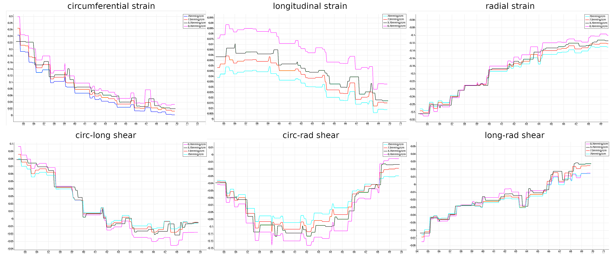
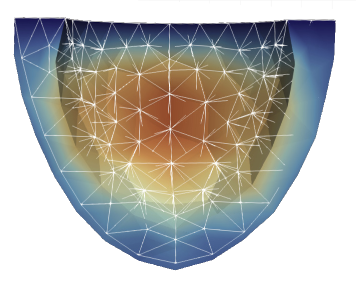
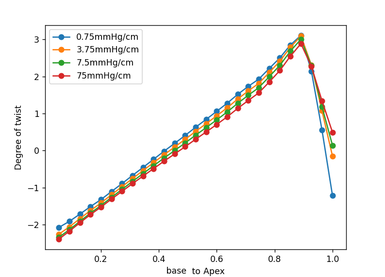

Making a ventricle move
A heart model has to do more than shrink. It has to stretch under pressure, resist motion differently along its fibers and produce a plausible twist when it contracts. Here is how we built and checked a finite element model of the left ventricle.
Think of the left ventricle just before it pumps. Blood has filled the chamber and pushed its wall outward. An electrical signal then sets the muscle fibers contracting. The wall thickens, the chamber gets smaller and different parts of the ventricle rotate in different directions. Reproducing that sequence means accounting for both the tissue's response to a load and the force it generates itself.
Our project starts with an idealized ventricular geometry rather than a patient scan. We represent the wall as a deformable solid, prescribe the pressure inside it and add contraction along locally oriented fibers. The goal is a mechanical simulation whose behavior can be inspected against established cardiac mechanics benchmarks, not a patient-specific prediction. The modeling choices build on work on orthotropic myocardium and ventricular activation.[1][2]
From movement to force
First we need a way to describe how every small piece of tissue moves. Let \(\mathbf{X}\) be a point in the initial wall and \(\mathbf{u}(\mathbf{X})\) its displacement. The deformation gradient captures how a tiny line element changes near that point:
The determinant \(J\) measures local volume change. The tensor \(\mathbf{F}\) also tells us how a fiber initially pointing in direction \(\mathbf{f}_0\) is carried along: its new direction before normalization is \(\mathbf{F}\mathbf{f}_0\). This single object links geometry, tissue stress and fiber motion.
At each simulated loading step we assume mechanical equilibrium. In the reference geometry the balance is \(\operatorname{Div}\mathbf{P}=\mathbf{0}\), where \(\mathbf{P}\) is the first Piola–Kirchhoff stress. Pressure and activation change between steps, but each step is solved as a static problem. That is a useful approximation for examining the sequence of shapes without modeling the propagation of the electrical signal or the flow of blood.
What holds the wall in place?
The three surfaces of the simplified ventricle have different jobs. The cut plane at the base cannot move through that plane, though it can slide along it. The inner surface receives a pressure load. The outer surface feels a restoring force proportional to its displacement, a simple stand-in for support from surrounding tissue. This last condition uses a stiffness \(\alpha\): increase it and outward motion becomes harder.[2]
The pressure is applied to the moving inner surface. In the calculation we express its force back on the reference surface using \(J\mathbf{F}^{-T}\), so its direction and area change as the ventricle deforms. The outer support contributes a spring-like surface term. These terms enter the force balance alongside the stress inside the wall.
The wall has a grain
A rubber ball would respond the same way no matter which direction we pulled it. Ventricular muscle does not. Its fiber direction, sheet direction and direction across the sheets create a local frame. Stretching a fiber and shearing a sheet can have different costs. Holzapfel and Ogden's orthotropic description motivates the passive part of our model.[1]
We assign that frame throughout the idealized ellipsoid. The sheet direction follows an ellipsoidal coordinate field. A circumferential starting direction is then rotated by an angle that varies across the wall. This produces helical fibers rather than identical rings stacked from base to apex. The local orientations matter twice: they govern passive stiffness and tell the active force which way to act.
Instead of writing a separate spring law for every direction, we define a strain energy \(W\). Its derivative with respect to \(\mathbf{F}\) produces passive stress. The ingredients include an isotropic response, fiber and sheet stretch, fiber–sheet coupling and a volume penalty:
Here \(I_{4f}=\mathbf{f}_0\cdot\mathbf{F}^{T}\mathbf{F}\mathbf{f}_0\) is the squared fiber stretch. The sheet quantity is defined in the same way and \(I_{8fs}\) measures their coupling. The barred invariant \(\bar I_1\) describes shape change after separating out volume change. The fiber and sheet terms grow sharply under stretch and use the positive part of stretch beyond the resting length, so their reinforcement is switched off under compression. The final term favors \(J\) near one while allowing small volume changes.
Contraction is a separate addition. We use an active stress aligned with the fibers:
Parameters controlling \(S_a\) set the activation level at each loading step. This approach adds a contractile contribution to the stress. It is one of the established ways to represent activation, alongside active strain formulations that alter the deformation itself.[3]
Turning equations into a moving mesh
We split the ventricular wall into finite elements and approximate displacement with functions defined on the mesh. The weak form asks that the combined internal, pressure and outer-support forces do zero virtual work for every permitted small test displacement. That gives a nonlinear system for the mesh's displacement values:
We implemented the three-dimensional solver in C++ with deal.II.[4] Newton iterations repeatedly assemble a residual and its Jacobian, solve for an update and adjust the displacement. The implementation evaluates the stress derivatives for the material terms and the changing pressure boundary. A damped update and occasional reuse of the Jacobian help with the nonlinear solve. We also built reduced versions using automatic differentiation, which obtains a Jacobian by differentiating the coded residual and gives us another route for checking the implementation.
We use a mesh with 30 thousand DOFs and elements of second order using a deal.II TRILU preconditioner.
A practical detail is easy to miss: the local fiber frame must be recomputed consistently at integration points. An accurate nonlinear solver cannot rescue a contraction force applied in the wrong direction.
Checking the motion
A shape that looks heart-like is a starting observation, not a validation. We compared passive and active cases with the standardized cardiac mechanics tests of Land and colleagues, which were designed to reveal differences between implementations.[5] For the automatic-differentiation Guccione variant, the manuscript reports a passive deformation-line comparison, passive inflation and a case with active contraction.
For the main ventricular model, we explored the strength of the outer support at an end-diastolic pressure of 1 kPa. The manuscript tests \(\alpha\) values of 75, 7.5, 3.75 and 0.75 mmHg/cm on a mesh with 1 mm elements. Inspection of basal strain against the reference data led us to use 7.5 mmHg/cm for the reported examples.[2] That is a calibration within this geometry and material model, not a universal stiffness of the pericardium.

Under pressure the simulated chamber expands. With activation the wall moves inward and the chamber volume falls. The manuscript illustrates these two regimes using a 1 kPa end-diastolic pressure and a 10 kPa end-systolic loading case with activation parameters \(S_n=3.5\) and \(\beta=1.0\). These are qualitative outcomes in the provided results; a full pressure–volume validation is still a separate task.


The most revealing check is twist. Because fibers change orientation across the wall, rotation should vary along the ventricle. Our slice analysis reports a reversal of twist from the basal region toward the apex at the end-diastolic loading case. The manuscript also notes a sharp feature near the apex, where its prescribed fiber field changes rapidly. That local behavior deserves care when interpreting the curve rather than being smoothed away in the story.

What this model earns us
The project puts several pieces of cardiac mechanics in one solver: a deforming geometry, directional passive stiffness, fiber-aligned active tension and loading conditions that make the ventricle move in a recognizable way. The benchmark cases and post-processing routines give us ways to question the result, including displacement, strain, volume and twist. They also show where the present evidence stops. The plots support plausible qualitative behavior and a selected boundary stiffness, while quantitative agreement across a full cardiac cycle and more realistic geometry would require further work.
That is the useful outcome of the exercise. Once the mechanics are explicit, a change in twist or wall motion is no longer just an animation. It can be traced back to a material law, a fiber direction, a boundary load or a solver decision.
References
- G. A. Holzapfel and R. W. Ogden, “Constitutive modelling of passive myocardium: a structurally based framework for material characterization” (2009). Paper record. ↑
- L. Barbarotta, S. Rossi, L. Dedè and A. Quarteroni, “A transmurally heterogeneous orthotropic activation model for ventricular contraction and its numerical validation” (2018). DOI.
- D. Ambrosi and S. Pezzuto, “Active stress vs. active strain in mechanobiology: constitutive issues” (2012). Paper record.
- deal.II project, library and recommended citations.
- S. Land et al., “Verification of cardiac mechanics software: benchmark problems and solutions for testing active and passive material behaviour” (2015). DOI.